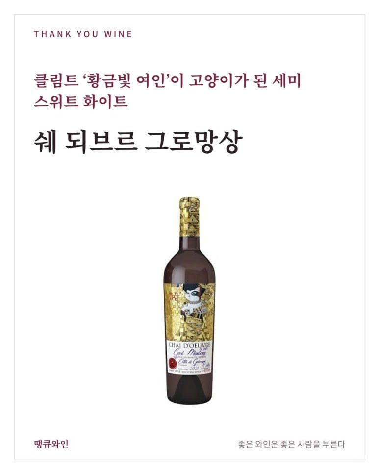
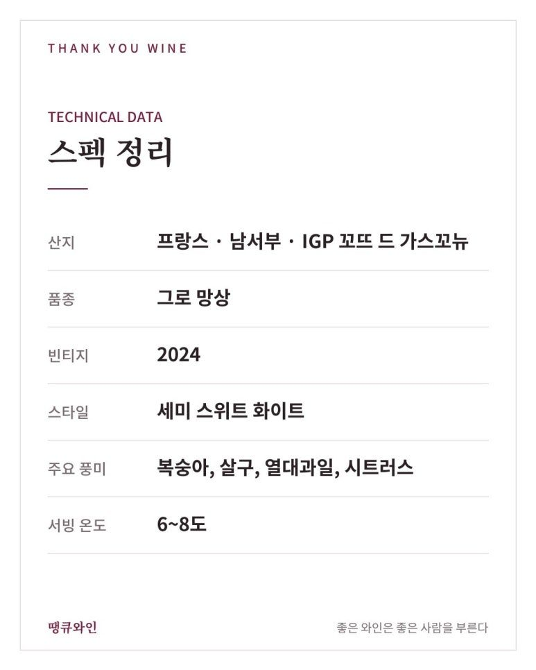
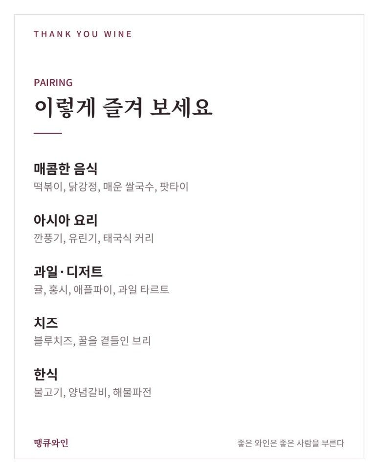
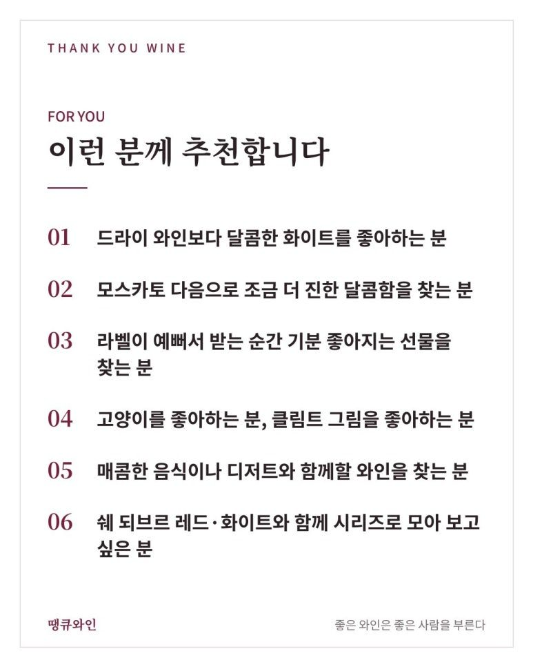
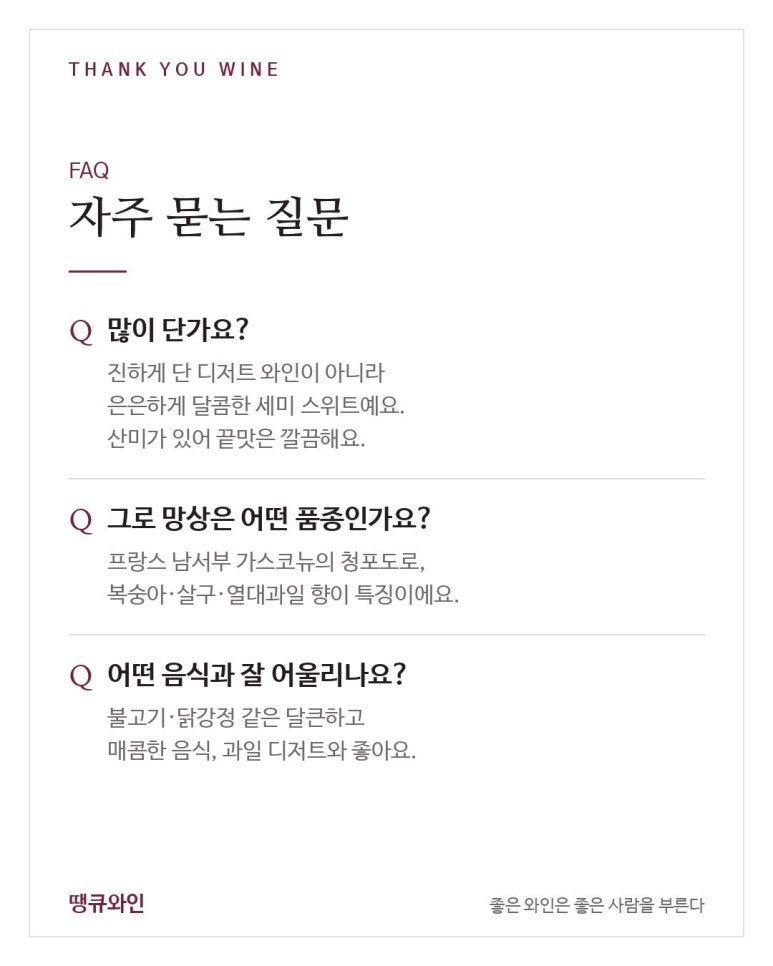

쉐 되브르 그로망상
클림트 ‘황금빛 여인’이 고양이가 된 세미 스위트 화이트
쉐 되브르 그로망상은 명화를 입은 라벨 + 은은하게 달콤한 세미 스위트 + 열대과일 향의 그로 망상이에요.
달콤한 화이트 와인을 고를 때, 라벨부터 눈에 들어오는 와인이 있습니다.
금빛 무늬 사이로 고양이 한 마리가 우아하게 앉아 있는 라벨.
어디서 본 듯한 이 그림, 바로 구스타프 클림트의 ‘아델레 블로흐-바우어의 초상’을 고양이로 다시 그린 작품입니다.
오늘 소개할 와인은 쉐 되브르 그로망상(Chai d'Oeuvre Gros Manseng)입니다.
프랑스 남서부 가스코뉴에서 온 그로 망상 품종의 세미 스위트 화이트 와인이에요.
무엇보다 중요한 포인트는 바로,
명화를 입은 라벨 + 은은하게 달콤한 세미 스위트 + 열대과일 향의 그로 망상이라는 것.

한눈에 보는 쉐 되브르 그로망상
- 생산자
- 비뇨블 벨라스(Vignobles Vellas), 프랑스 랑그독
- 산지
- 프랑스 남서부 · IGP 꼬뜨 드 가스꼬뉴(Côtes de Gascogne)
- 품종
- 그로 망상(Gros Manseng)
- 빈티지
- 2024
- 스타일
- 세미 스위트 화이트 와인
- 이런 분께
- 달콤한 화이트 입문, 라벨 예쁜 선물 와인을 찾는 분
- 까베르네 소비뇽
- 반 고흐 ‘별이 빛나는 밤’
- 피노 누아
- 드미트리 스피로스 ‘밤의 물랑루즈’
- 메를로
- 조나단 솔터 ‘젤리피쉬’
- 샤르도네
- 로에티티아 필로트 ‘프레셔스 헤븐리’
- 소비뇽 블랑
- 레오니드 아프레모프 ‘에펠탑’
- 그로 망상
- 마리아 파즈, 클림트 ‘아델레 블로흐-바우어의 초상’ 재해석
- 구매처
- 성수동 땡큐와인 매장 · 카톡으로 입고·가격 1:1 안내
쉐 되브르 그로망상 테이스팅 노트
세미 스위트 그로 망상은 달콤함과 산뜻함이 함께 있는 화이트입니다.
잔에 따르면 밝은 황금빛이 돌고, 향에서는 잘 익은 복숭아, 살구, 파인애플 같은 열대과일, 그리고 시트러스 향이 화사하게 올라옵니다.
입안에서는 과일의 단맛이 먼저 부드럽게 느껴지고, 그 뒤를 그로 망상 특유의 산미가 받쳐 줍니다.
그래서 달콤한 와인인데도 끈적이지 않고 깔끔하게 넘어가는 편이에요.
모스카토처럼 기포가 있는 와인은 아니라서, 식사와 함께 천천히 마시기에도 좋습니다.
CHAI D'OEUVRE GROS MANSENG
- 산지: 프랑스 · 남서부 · IGP 꼬뜨 드 가스꼬뉴
- 품종: 그로 망상
- 빈티지: 2024
- 스타일: 세미 스위트 화이트
- 주요 풍미: 복숭아, 살구, 열대과일, 시트러스
- 서빙 온도: 6~8도

쉐 되브르 그로망상과 어울리는 음식은?
은은한 단맛과 산미가 함께 있는 와인이라 매콤한 음식, 과일 디저트, 짭짤한 치즈와 특히 잘 맞습니다.
땡큐와인에서 추천한다면 쌀쌀해지는 11월에는 이런 메뉴와 함께 즐겨 보겠습니다.
- 매콤한 음식: 떡볶이, 닭강정, 매운 쌀국수, 팟타이
- 아시아 요리: 깐풍기, 유린기, 태국식 커리
- 과일·디저트: 귤, 홍시, 애플파이, 과일 타르트
- 치즈: 블루치즈, 꿀을 곁들인 브리
- 한식: 불고기, 양념갈비, 해물파전
특히 양념이 달큰한 불고기나 매콤한 닭강정과의 조합을 추천드립니다.
와인의 단맛이 양념과 자연스럽게 이어지고, 산미가 기름진 맛을 깔끔하게 정리해 줍니다.
매운 음식과 함께라면 은은한 단맛이 입안의 얼얼함을 부드럽게 달래 주고요.

쉐 되브르 그로망상, 이런 분께 추천합니다
- 드라이 와인보다 달콤한 화이트를 좋아하는 분
- 모스카토 다음으로 조금 더 진한 달콤함을 찾는 분
- 라벨이 예뻐서 받는 순간 기분 좋아지는 선물을 찾는 분
- 고양이를 좋아하는 분, 클림트 그림을 좋아하는 분
- 매콤한 음식이나 디저트와 함께할 와인을 찾는 분
- 쉐 되브르 레드·화이트와 함께 시리즈로 모아 보고 싶은 분

실제로 땡큐와인에서도 쉐 되브르 그로망상은 선물용으로 찾는 분들이 많은 와인입니다.
포장을 풀자마자 금빛 라벨이 먼저 눈에 들어와, 와인을 잘 모르는 분께도 ‘특별한 한 병’이라는 느낌을 줄 수 있거든요.

자주 묻는 질문
Q. 쉐 되브르 그로망상은 많이 단가요?
A. 디저트 와인처럼 진하게 단 스타일이 아니라, 은은하게 달콤한 세미 스위트입니다. 산미가 있어 끝맛은 깔끔한 편이에요.
Q. 그로 망상과 쁘띠 망상은 어떻게 다른가요?
A. 같은 망상 집안 품종으로, 그로 망상이 알이 더 굵습니다. 쁘띠 망상은 주로 진한 스위트 와인에, 그로 망상은 드라이부터 세미 스위트까지 폭넓게 쓰입니다.
Q. 개봉 후 얼마나 보관할 수 있나요?
A. 마개를 닫아 냉장 보관하면 2~3일 정도 맛있게 즐길 수 있습니다.
결국 쉐 되브르 그로망상의 매력은 ‘기분 좋은 한 병’입니다
쉐 되브르 그로망상은 4대째 와인을 만들어 온 벨라스 가문이, 가스코뉴의 그로 망상으로 만든 세미 스위트 화이트입니다. 클림트의 황금빛을 입은 고양이 라벨, 복숭아와 열대과일 향, 그리고 부담 없는 달콤함. 그래서 저는 이 와인을
“열기 전부터 기분이 좋아지는 와인”
이라고 소개하고 싶습니다.
달콤한 화이트 한 잔이 생각나는 저녁, 또는 특별한 분께 드릴 선물이 필요할 때 쉐 되브르 그로망상을 만나 보세요.
구매 전에 자주 묻는 질문
쉐 되브르 그로망상은 어디서 살 수 있나요?
서울 성수동 땡큐와인 매장(성동구 성덕정길 109 2층)에서 구매할 수 있어요. 카카오톡으로 와인 이름을 보내 주시면 입고 상황과 가격을 1:1로 알려 드리고, 매장에서 바로 가져가시거나 미리 주문해 두실 수 있어요.
쉐 되브르 그로망상 가격은 얼마인가요?
수입사 행사와 입고 시기에 따라 가격이 자주 바뀌어서 사이트에는 적지 않고, 카카오톡으로 1:1 안내해 드려요. 모임·선물용 수량 주문은 세금계산서 발행도 돼요.
이 글은 땡큐와인 네이버 블로그에 먼저 올린 글이에요.